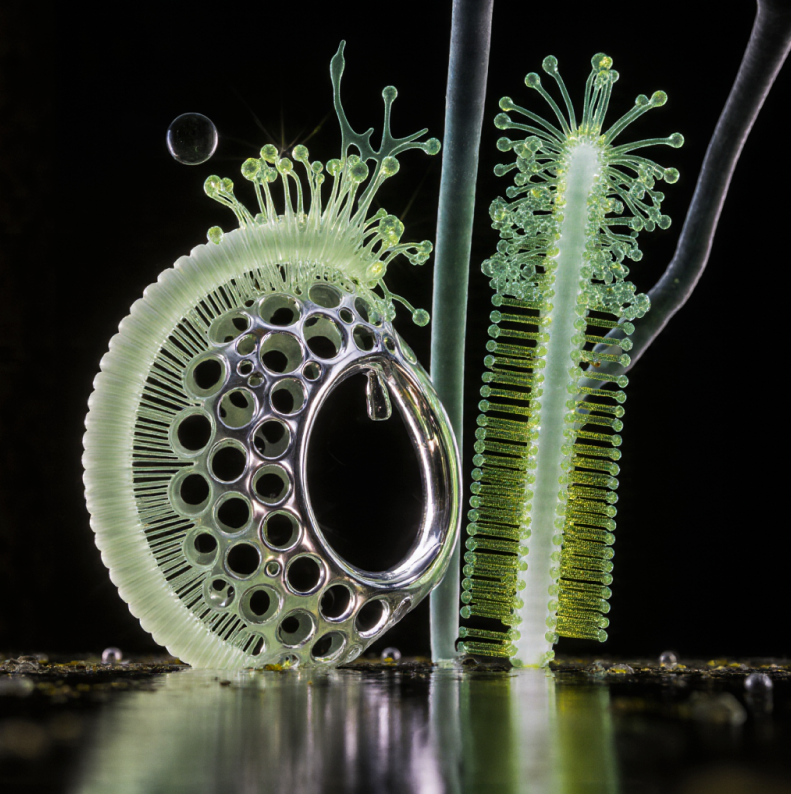

Quorum Sensing
¿Qué sonidos desaparecen cuando un humedal muere? Eso nos preguntamos al llegar a la orilla.
- En
Quorum Sensing is a fictional work constructed from dialogues with artificial neural networks regarding the notion of Maternal Artificial Intelligence proposed by Geoffrey Hinton—conceived as a possible path for envisioning future coexistence between humans and machines. The piece stretches this maternal idea toward a relational principle rather than an attribute bound to a subject, proposing a logic of distributed care that emerges across species, systems, and technologies.
- Es
Qvorvm Sensing es una obra ficcional construida a partir de diálogos con redes neuronales artificiales en torno a la noción de Inteligencias Artificiales Maternales propuesta por Geoffrey Hinton, entendida como una posible vía para pensar la convivencia futura entre humanos y máquinas. La obra tensiona esta idea de lo maternal hacia un principio relacional más que como una cualidad asociada a un sujeto, una lógica de cuidado distribuido que emerge entre especies, sistemas y tecnologías.
- Date
- 2025
- Place
- Chile
- Colaboradorxs
- Diplomado de
- Materiales
- Audio, fotografía analógica, fanzine impreso
- Exhibición
- Museo Regional de Osorno, dic. 2022

Amanecer sobre el humedal río Damas, 2022.
Redes extendidas al sol, humedal río Damas, 2022.
Fanzine impreso, 32 páginas, dic. 2022.